Marx e Engels
Manifesto do Partido Comunista
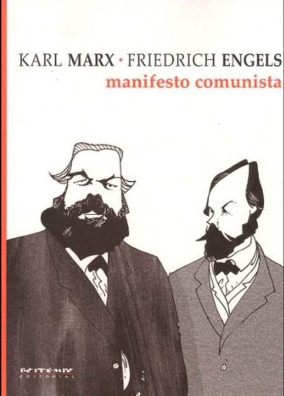Miséria da Filosofia
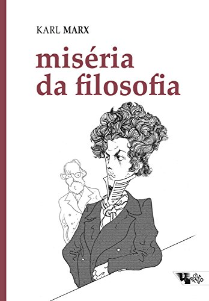Ideologia Alemã
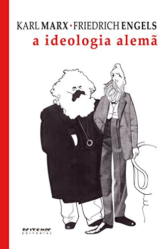18 brumário de Luiz Bonaparte
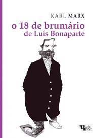Anti-Duhring
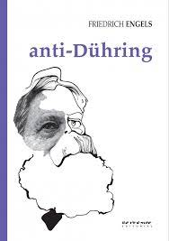O Capital
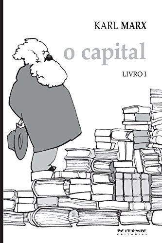Lenin
Esquerdismo doença infantil do comunismo
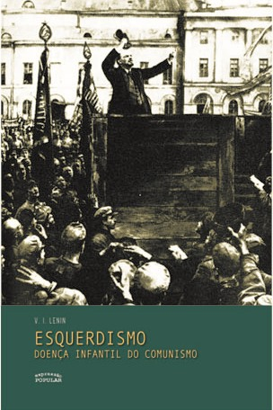Cadernos Filosóficos
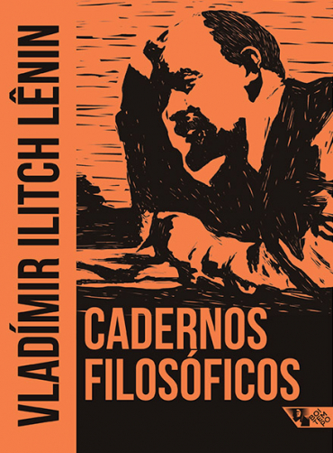Manifesto do Partido Comunista
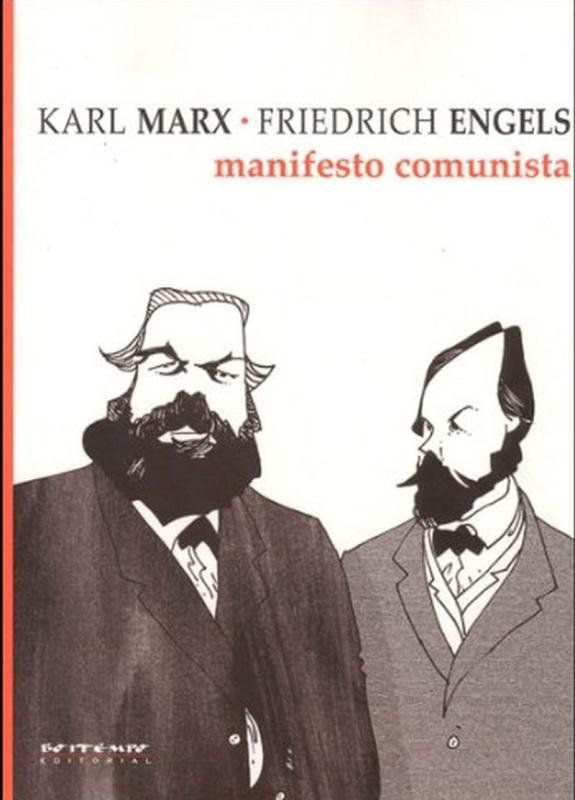Miséria da Filosofia
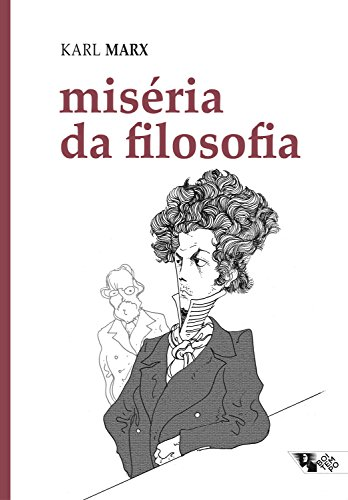Ideologia Alemã
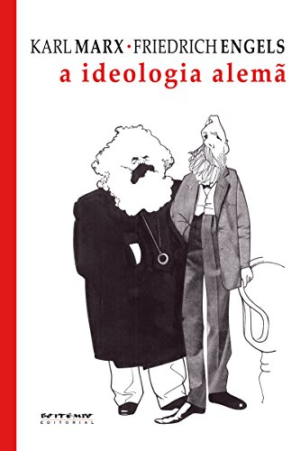18 brumário de Luiz Bonaparte
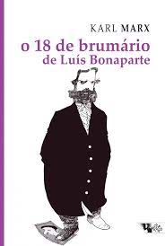Anti-Duhring
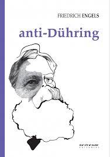O Capital
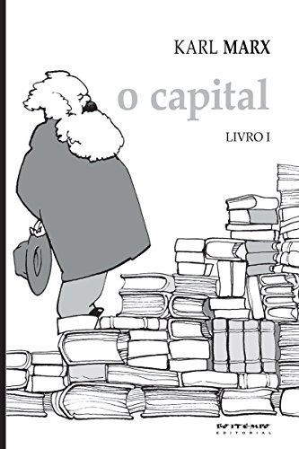Esquerdismo doença infantil do comunismo
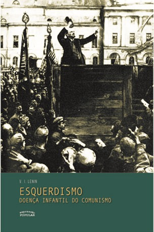Cadernos Filosóficos
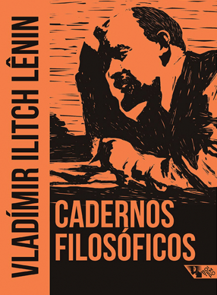